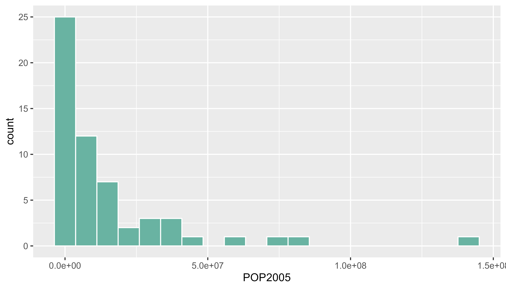

Related chart types

Map

Choropleth

Hexbin map

Cartogram

Connection

Bubble map
This post explains how to build a choropleth map with R. It shows how to load geospatial data, bind it to a numeric value and draw the map.
Two inputs are needed to build a choropleth map:
Note: this step is described in detail here. Read it if you are not familiar with geospatial data management in R.
The region boundaries required to make maps are usually stored in geospatial objects. Those objects can come from shapefiles, geojson files or provided in a R package. See the map section for possibilities.
Let’s get a geospatial object from a shape file available here.
# Download the shapefile. (note that I store it in a folder called DATA. You have to change that if needed.)
download.file("http://thematicmapping.org/downloads/TM_WORLD_BORDERS_SIMPL-0.3.zip" , destfile="DATA/world_shape_file.zip")
# You now have it in your current working directory, have a look!
# Unzip this file. You can do it with R (as below), or clicking on the object you downloaded.
system("unzip DATA/world_shape_file.zip")
# -- > You now have 4 files. One of these files is a .shp file! (TM_WORLD_BORDERS_SIMPL-0.3.shp)And let’s load it in R
# Read this shape file with the rgdal library.
library(rgdal)
my_spdf <- readOGR(
dsn= paste0(getwd(),"/DATA/world_shape_file/") ,
layer="TM_WORLD_BORDERS_SIMPL-0.3",
verbose=FALSE
)
# Select Africa only
africa <- my_spdf[my_spdf@data$REGION==2 , ]
# -- > Now you have a Spdf object (spatial polygon data frame). You can start doing maps!The hardest part is to build the color palette that will be used on the map. The RColorBrewer package makes it a breeze to get a nice set of colors thanks to its brewer.pal() function.
Once the palette is created, POP2005 is cut in several bins using the cut() function, and the approriate color is attributed to each bin.
Finally, build the map with plot() and give the color vector to the col argument to get the choropleth.
In a choropleth map, each region has a color that represents the value of a numeric variable.
In this example, this variable is already available in the data slot of the geospatial object. You can have a look to it typing africa@data in the terminal.
This object is a data frame. It is thus possible to visualize the distribution of POP2005 with a classic histogram made in ggplot2

# library
library(dplyr)
library(ggplot2)
# Make sure the variable you are studying is numeric
africa@data$POP2005 <- as.numeric( africa@data$POP2005 )
# Distribution of the population per country?
africa@data %>%
ggplot( aes(x=as.numeric(POP2005))) +
geom_histogram(bins=20, fill='#69b3a2', color='white')The hardest part is to build the color palette that will be used on the map. The RColorBrewer package makes it a breeze to get a nice set of colors thanks to its brewer.pal() function.
Once the palette is created, POP2005 is cut in several bins using the cut() function, and the approriate color is attributed to each bin.
Finally, build the map with plot() and give the color vector to the col argument to get the choropleth.
# Palette of 30 colors
library(RColorBrewer)
my_colors <- brewer.pal(9, "Reds")
my_colors <- colorRampPalette(my_colors)(30)
# Attribute the appropriate color to each country
class_of_country <- cut(africa@data$POP2005, 30)
my_colors <- my_colors[as.numeric(class_of_country)]
# Make the plot
plot(africa , xlim=c(-20,60) , ylim=c(-40,40), col=my_colors , bg = "#A6CAE0")Related chart types